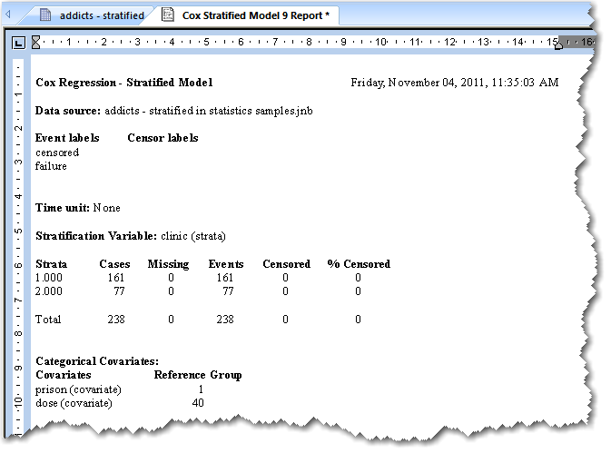

Interpreting Cox Regression Results
The Cox Regression report displays statistical information about the input data, the best-fit results for the hazard model, the results of hypothesis testing, confidence intervals, and covariate-adjusted survival probabilities. For more in-depth discussions of the statistics and performance measures reported for Cox Regression see Hosmer & Lemeshow or Kleinbaum.

Results Explanations
In addition to the numerical results, expanded explanations of the results may also appear. You can turn off this text on the Options dialog box. You can also set the number of decimal places to display. For more information, see Report Graphs.
Header. This includes the name of the test, date stamp, and data source, as for all other tests.
Event and Censor Labels. is a listing of the labels that you've selected in the Test Wizard. There can be more than one label of each type.
Time Unit. This information comes from a setting in the Test Options dialog box and is used to indicate the unit of survival time on result graphs.
Stratification Variable. This is the worksheet column (by title) to stratify the data if using the Stratified Model test. This section does not appear if you're using the Proportional Hazards test.
Basic summary of time-event data over strata. This is a table whose first column is a list of the strata for the stratification variable. The remaining columns have integer entries and are titled: Cases, Missing, Events, Censored, and % Censored. The last row of the table gives the total over all strata. If there is no stratification variable, then the table has one row of data.
Regression analysis. This section contains the results of maximizing the partial log-likelihood function for the Cox Proportional Hazards Model to obtain the maximum likelihood estimates of the coefficients. The partial likelihood function is based on the Breslow method for resolving ties.
The coefficient values found by the regression are used to represent the hazard as a function of time and the covariates. Each categorical covariate in the model is replaced by one or more reference coded dummy variables, each with its own coefficient, before the regression analysis is performed. The optimization process uses an iterative Damped-Newton method with zero as the starting value for each coefficient.
The output of the analysis depends upon the variable selection method that is specified in the Test Options dialog, either Complete or Stepwise. The default method is Complete, where all covariates that you selected are used to model the hazard function. When the default method is used, the results show the maximum value of the log-likelihood function, the number of iterations to convergence, and the tolerance used in the criterion for convergence.
If the Stepwise method is chosen, then only the covariates that contribute most to increasing the value of the likelihood function are included in the hazard model. The included covariates are determined using a step-by-step procedure. More details on the stepwise-regression results are given later.
Testing the Global Null Hypothesis. This is the hypothesis that all coefficients in the hazard model are zero. SigmaPlot provides two tests: the (partial) Likelihood Ratio test and the Global Chi-Square test (also called Score test). The statistic for each test has a chi-square distribution with p degrees of freedom, where p is the number of covariates. The default significance level of the test is .05, which can be changed on the Report tab of the Tools/Options dialog box.
A significant result means that at least one of the covariates has a significant effect on survival time. If the result is not significant, then no covariate significantly influences the survival time and a Kaplan-Meier analysis should be considered for computing survival probabilities.
Both tests are used by many survival software applications and they usually agree in their determination of significance. In the event they disagree, then the result of the Likelihood Ratio test should be used as it is more accurate.
Model Estimates. This is a table of the best-fit coefficient values and their basic statistics. It has five columns. The first column gives the names of the covariates. If stepwise regression is used, then only the names of the covariates included in the model will be listed. The remaining columns will be titled Coefficient, StdErr, Wald Chi-Square, and P Value. The Wald Chi-Square statistic measures the significance of the covariate, testing the hypothesis that the coefficient is zero. The significance level is the same as the one used for testing the Global Null Hypothesis.
Confidence. There are two sets of confidence intervals. The first set is a table with four columns giving the confidence intervals of the coefficients for each covariate listed in the Model Estimates section. The first two columns are the same as the Model Estimates table. The confidence level has a default value of 95%, but can be changed in the Test Options dialog box.
The second set is a table with four columns that includes the hazard ratio for each covariate in the model. The hazard ratio for a covariate is the proportional change in the hazard rate due to a unit change in the value of the covariate. When the covariate represents a dummy variable corresponding to some group in a categorical covariate, then the hazard ratio measures the hazard rate for that group relative to the reference group. In this case, the confidence interval in columns 3 and 4 can be used to test the hypothesis that the two groups have the same hazard rate by testing the hypothesis the hazard ratio is 1. This can be tested by seeing if 1 lies in the confidence interval.